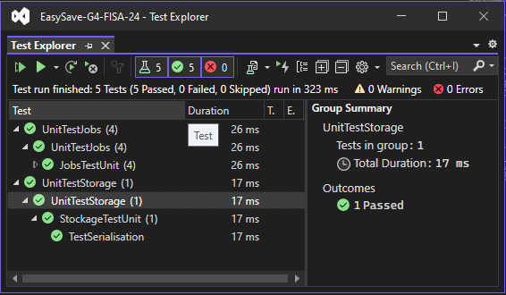
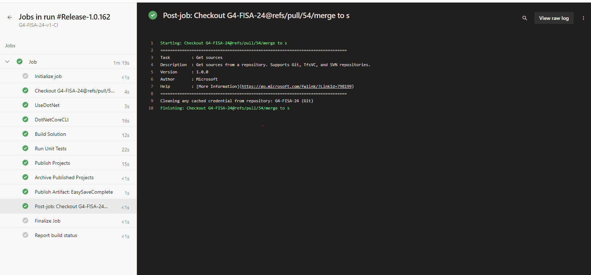
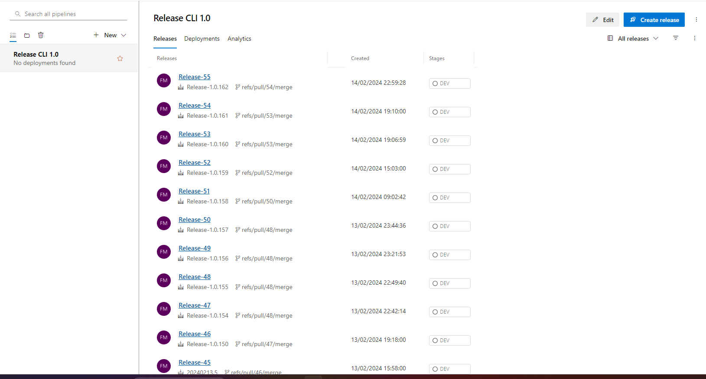

Easy Save
Introduction
Le livrable 1 contient la première version fonctionnelle d'EasySave, conformément aux spécifications de ProSoft.
Cette version initie le développement d'une application console .NET Core pour la gestion des tâches de sauvegarde.
Prérequis
- Processus d'installation
- Cloner la branche livrable-1 et ouvrir le projet avec Visual Studio 2022.
- Assurez-vous d'avoir installé .NET Core 6.0.
- Dépendances logicielles
- .NET Core 6.0
- Visual Studio 2022
Executer Easy Save
Windows
Lancer EasySave.exe dans le répertoire ../G4-FISA-24/EasySave-G4-FISA-24/EasySave/bin/Debug/net6.0/EasySave.exe.
Linux
Exécutez ./EasySave apres avoir fait la publication depuis visual studio.
Publication de EasySave

Il faut specifier le 'Target runtime' en fonction du système d'exploitation

Tests
Ouvrez l'explorateur de tests dans Visual Studio et exécutez les tests unitaires.


Tous les tests sont testés pendant la phase CI/CD, mais il est préférable d'exécuter les tests avant de 'push'.
Dernières versions
Veuillez consulter l'onglet "releases" pour accéder à la dernière version du livrable 1 (Pipelines -> Releases) :
https://dev.azure.com/faikmehmeti/G4-FISA-24/_release?_a=releases&view=mine&definitionId=1
Construction et test
Une demande de téléchargement vers la branche develop-livrable-1 déclenche automatiquement un processus de construction et de test (tests unitaires uniquement).
Une demande d'extraction vers la branche livrable-1 déclenche automatiquement un processus d'intégration continue, depuis la construction et les tests jusqu'à la publication.
Ces processus peuvent être visualisés via les pipelines : https://dev.azure.com/faikmehmeti/G4-FISA-24/_build
NOTES : Un seul agent peut gérer l'exécution d'un seul pipeline ; le parallélisme n'est pas possible.
Fonctionnalités
- Sauvegarde séquentielle
- Journaux quotidiens
- Journaux d'état
- Choisir la langue
- Lister les jobs
- Charger une configuration de Jobs
- Créer un job
- Supprimer un job
- Lancer les jobs
Point d'entrée de l'application console
using View = EasySave.Views.View;
namespace EasySave // Note: actual namespace depends on the project name.
{
/// <summary>
/// Application entry point
/// </summary>
internal class Program
{
[STAThread]
static void Main(string[] args)
{
View pView = new View();
//Lance le program principale
pView.Run();
}
}
}
Architecture

L'architecture est basée sur un modèle MVVM avec :
- Modèles : classes représentant les données (CJob, CJobManager, CSettings, etc.)
- Vues : classes représentant les vues (BaseView, View, JobView, etc.)
- ViewModels : classes faisant le lien entre modèles et vues.
Systeme de Log
Emplacement par defaut du CJobManager et CSettings et l'emplacement des modèle de logs stockée grace aux classes de journalisation dans le package Logs
L'emplacement actuel des journaux d'événements est stocké dans le dossier Logs.
L'emplacement actuel des paramètres de l'utilisateur est stocké dans le répertoire racine Settings.json.
L'emplacement des tâches de sauvegarde est stocké dans le dossier Jobs.
Les logs dont le nom est formaté dans ce type Logs - 2024-02-15 sont des logs journalier.
Le fichier Logs.json est l'état du journal.
Processus d'intégration continue (CI) et de déploiement continu (CD) utilisant Azure DevOps
Configuration de l'Intégration Continue
Déclenchement des Pipelines
Les pipelines d'intégration continue sont configurés pour se déclencher automatiquement lors d'un pull request vers la branche principale. La validation de l'intégration continue est un prérequis avant toute fusion de code.
Processus d'Intégration
- Build : Compilation du code source en un exécutable ou en un paquet déployable.
- Tests Automatisés : Exécution de tests pour vérifier la qualité et la fonctionnalité du code.
- Publication des Releases : Création et stockage des artefacts de release dans Azure DevOps.

Gestion du Déploiement Continu
Bien que l'intégration continue soit automatisée, le déploiement continu nécessite actuellement une intervention manuelle.
Accès aux Releases
https://dev.azure.com/faikmehmeti/G4-FISA-24/_release

Vous pourriez suivre ici l'état de déploiement pour chaque release
Ce lien permet de suivre l'état de déploiement pour chaque release.

Gestion du Déploiement
En sélectionnant une release, vous serez dirigé vers une page où le déploiement continu peut être géré. Actuellement, les déploiements doivent être effectués manuellement pour chaque étape (Stages).